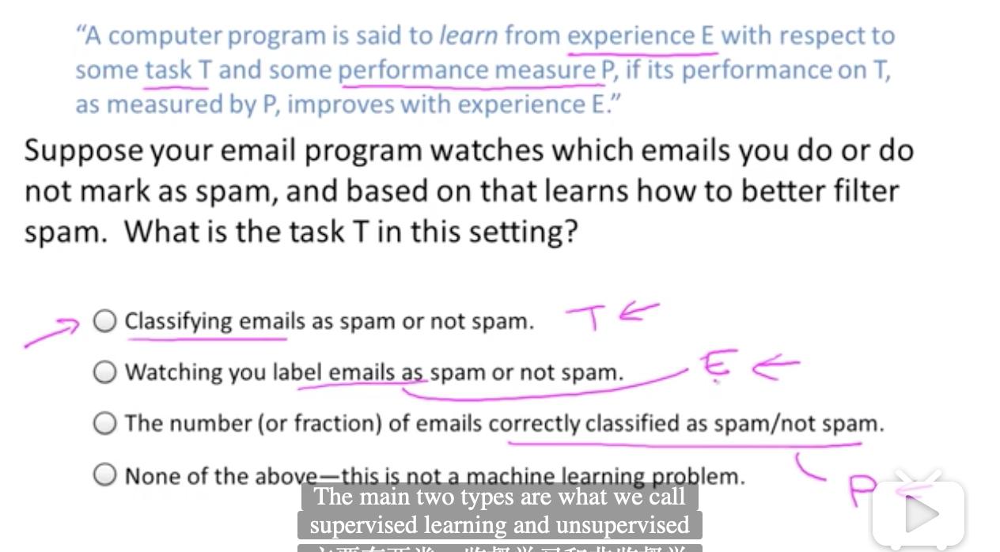
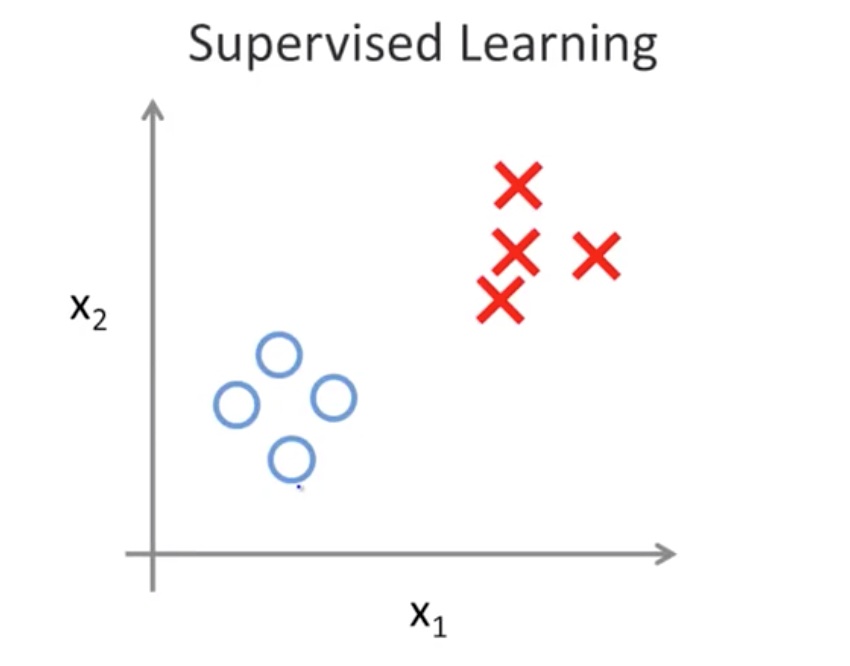
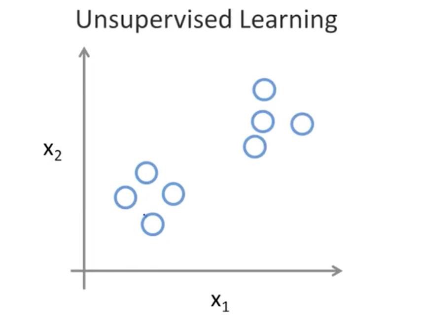

以下内容都是来源于吴恩达老师的机器学习教学视频
机器学习定义
Tom Mitchell(1998):
A computer program is said to learn from experience E with respect to some task T and some performance measure P, if its performance on T, as measured by P, improves with experience E.

监督学习
给算法一个数据集，并且给定正确答案。
回归问题
Regression
给出连续的输出值
- 举例
- 房价预测
分类问题
Classification
给出离散的输出值
- 举例
- 乳腺癌良性与恶性诊断
无监督学习
在无监督学习的数据集中，没有属性或标签这一概念，所有数据都是一样的，没有区别。
监督学习与无监督学习的区别
(图片源于教学视频)

对于监督学习里的每一个样本，我们已经告知了正确答案，比如，良性或恶性。

聚类问题
cluster
- 举例
- Google新闻
收集新闻，组成不同新闻专题 - 大型计算机集群
找出哪些机器倾向于协同工作 - 社交分析
得知email联系情况、Facebook好友等等，自动识别哪些是很要好的朋友组 - 市场分割
自动将客户分到不同细分市场中（预先并不知道谁属于细分市场1，需要从数据中分析得知） - 天文数据分析
- Google新闻
鸡尾酒会
Cocktail party problem
分离不同人声、音乐声与人声